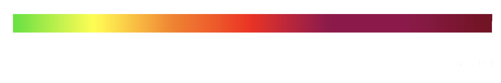
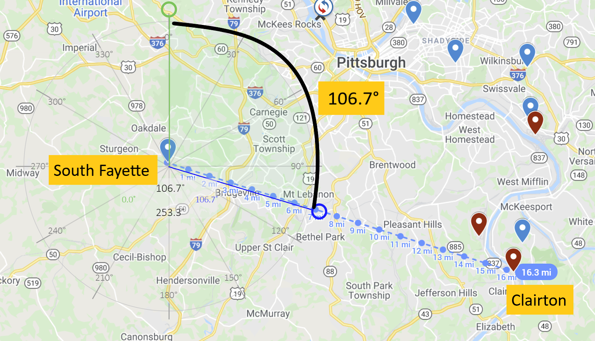

Moving dots show how pollution spreads from some of the most significant emitters, using the most detailed NOAA weather models.
While no weather model is perfect, these modeled pollution paths show striking correspondence with Smell Pittsburgh reports and total-VOC air monitors. The models show how emissions maintain significant concentration in the air even miles from a source, especially on days when the ground is colder than the upper level atmosphere, causing pollution to concentrate close to the ground in a common condition known as an inversion. The greater Pittsburgh area experiences an average of around 157 inversion days per year [1].
Our model shows the four largest emitters of SO2 and other sulfur oxides in Allegheny County, which correlates strongly with smell reports and also health impacts. See self-reported air emissions inventory for these four sources. There are a number of smaller pollution sources not shown that can also correlate with smell reports and monitor values and impact health.
As pollution rises, dots fade away as the ground-level impact reduces. This model shows only the variability from weather conditions and does not consider individual sources changing pollutant outputs over time.
About the SO2 Monitors
In the greater Pittsburgh area, SO2 is a commonly measured pollutant associated with adverse health outcomes.
We know this from health impacts on residents living close to Shenango coke works in the years before and after its shutdown in 2016. After shutdown, emergency room visits for asthma and COPD dropped 38%. Cardiovascular emergencies dropped 27%[2][3]. And pediatric asthma studied in a local school showed a 25% reduction in physician-diagnosed asthma the year after shutdown.
These reductions in health impact were observed together with a 10-fold reduction in SO2, from an average of 1.5 PPB from Jan 2014-Dec 2015, down to an average of 0.15 PPB from July 2016-Jun 2018.
We therefore use the following color scale when showing SO2 measurements:
Pollution Carries
Our model shows that air pollution can carry significant distances. To validate this hypothesis, we ran analyses of ACHD monitor data at varying distances from one of the biggest sulfur emitters in Allegheny County shown on our site, Clairton Coke Works.
The above image shows ACHD monitors in blue and the major polluters in the Mon Valley in dark red. A protractor is placed over the South Fayette monitor to show relative wind directions. Clairton is at a 106.7° angle from South Fayette. The monitor is over 16 miles away from Clairton.
We plotted wind direction vs. SO2 measurements to see if pollution that carries from the direction of Clairton, 106.7°, would register higher levels of SO2. We chose three timeframes to compare: before, during, and after the 2019 fire at Clairton Coke Works, which damaged pollution controls and released sulfur pollution for several months at the begining of the year.
These plots consistently show elevated levels of SO2 from the direction of Clairton. During the multi-month pollution event, the levels of SO2 coming from Clairton almost doubled.
This analysis suggests that air pollution has effects beyond the immediate surroundings of emitters. Pollution in one part of the airshed has the potential to spread throughout the entire region.
References
- Allegheny County Health Department Inversion Report 2019: (Link)
- Brink, Marshall, Hacker, Talbot. Changes in emergency department visits for respiratory and cardiovascular disease after closure of a coking operation near Pittsburgh, PA, Journal of Air Pollution and Health, January 2020. (Link)
- Marusic, ER visits for asthma dropped 38% the year after one of Pittsburgh's biggest polluters shut down, Environmental Health News, May 8, 2018 (Link)